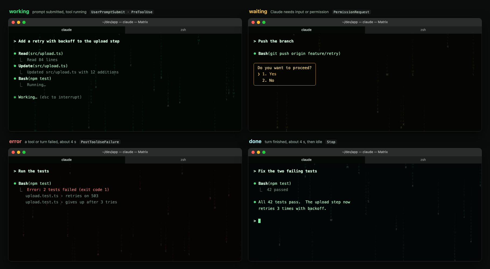
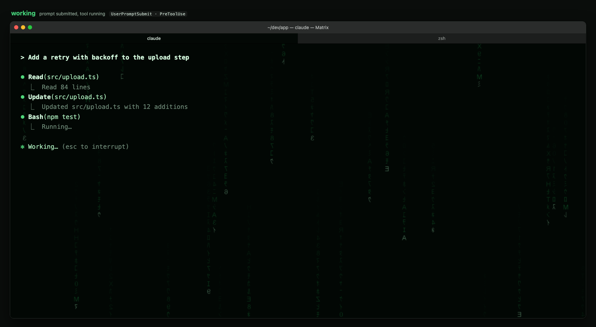
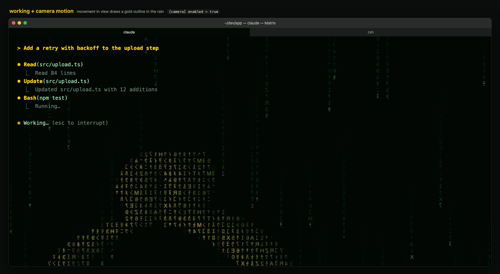

A soft Matrix rain behind iTerm2, reacting to Claude Code.
A Matrix color theme for iTerm2 with animated digital rain drawn behind your text. The rain changes color as Claude Code works, waits for you, fails and finishes.
Free · MIT license · macOS · iTerm2 3.5+ · Python 3.10+

Sample mock. One rain, four moods: working, waiting, error and done.
What you get
- A Matrix profile for iTerm2: white text and phosphor green accents on near-black.
- Katakana and digit rain behind the text at about 6 frames per second.
- Rain that eases to a new palette when Claude Code changes state.
- Auto-start with iTerm2, and a one-time notice when iTerm2 is newer than tested.
- Self-update from this repo at start: fast-forward only, clean clone only.
- Optional camera motion: the rain outlines in gold whatever moves in view. Off by default.
- Light on the machine: iTerm2 uses about 6% CPU idle and 22 to 24% while animating, focused window only.
Install
- Turn on iTerm2's Python API: Settings > General > Magic > Enable Python API.
- Clone and install, with auto-start:
git clone https://github.com/dharmaje/iterm2-matrix-rain.git cd iterm2-matrix-rain ./install.sh --install --autolaunch - Add the Claude Code hooks (next card).
- Pick the Matrix profile. Set it as the default, or apply it to the current session:
/Applications/iTerm.app/Contents/Resources/utilities/it2 profile apply Matrix
The installer checks macOS, iTerm2 and Python first and prints a table. It asks before upgrading a package. If a minimum is missing, it stops and writes nothing.
Claude Code hooks
Print the hook entries, then merge them into ~/.claude/settings.json next to any hooks you already have.
./install.sh --hooksEach hook sends a one-line state event to the daemon over a local socket. It prints nothing to Claude and always exits cleanly.
States
| State | Rain | When |
|---|---|---|
| idle | Deep dim green, slow, sparse | Session start |
| working | Brighter green, faster, denser | Prompt submitted, tool running |
| waiting | Amber, slow | Claude needs input or permission |
| error | Muted crimson for about 4 s | A tool or turn failed |
| done | Cool cyan-white for about 4 s, then idle | Claude finished |
| off | Fades out | Session end |

Camera motion (optional, off by default)
Install the optional packages, enable the camera, then restart the daemon:
./install.sh --camera
.venv/bin/matrix-rain camera enableTo turn it off, disable it and restart the daemon:
.venv/bin/matrix-rain camera disable- Where something moves, the rain draws a gold outline of it, then fades back to green over about 5 s.
- New motion bursts brighter for the first 6 s, then settles.
- The camera opens only while the rain animates at full rate, so its light is off when idle.
- It reads a low-resolution motion mask. Nothing is recorded or stored.
To fill the moving shape instead of outlining it, set this in ~/.config/iterm2-matrix-rain/config.toml:
[camera]
shape = "fill" # default "outline"The Matrix profile's status bar includes a clickable camera on/off item. Click it to switch the camera; the setting is saved.

Shortcut aliases (suggested)
The scripts/ folder has four zsh helpers. Add these lines to ~/.zshrc with your clone's path, then open a new shell.
alias matrix-on='~/iterm2-matrix-rain/scripts/enable-matrix-profile.zsh --run'
alias matrix-off='~/iterm2-matrix-rain/scripts/disable-matrix-profile.zsh --run'
alias matrix-camera-on='~/iterm2-matrix-rain/scripts/enable-camera.zsh --run'
alias matrix-camera-off='~/iterm2-matrix-rain/scripts/disable-camera.zsh --run'matrix-onandmatrix-offswitch the current window to the Matrix profile and back to your default profile. They work inside tmux.matrix-camera-onandmatrix-camera-offturn camera motion on or off and restart the daemon.
Editing the Matrix profile
The Matrix profile is an iTerm2 Dynamic Profile marked rewritable: edits you make in Settings > Profiles > Matrix, such as adding a battery item to the status bar, are saved into its file. Without that mark, iTerm2 shows a “Changes Will Be Lost” dialog and discards the edit.
- Your edits live in the installed file only. Reinstalling replaces it, after saving your copy to
~/.cache/iterm2-matrix-rain/profile-backups/. - iTerm2 may reorder the file's keys when it saves. That is expected.
- Keep the name
Matrix, and the Matrix rain camera item if you use the toggle. - Never copy the file into the same folder under another name; two profiles with one Guid clash.
If a change breaks it, put the repo's profile back or restore a saved copy:
scripts/reset-matrix-profile.zsh --run
scripts/reset-matrix-profile.zsh --run ~/.cache/iterm2-matrix-rain/profile-backups/<file>.json
scripts/enable-matrix-profile.zsh --runIf a Settings dialog will not close, quit iTerm2 (⌘Q, or Force Quit with ⌥⌘Esc). Shells inside tmux keep running; reattach with tmux attach -t <name>. ./install.sh --uninstall removes everything.
Configure
Put overrides in ~/.config/iterm2-matrix-rain/config.toml. Keys you leave out keep
their defaults. The daemon reads the file at start. The README lists every key.
[daemon]
fps = 6.0 # frames per second, focused window
blend = 0.6 # higher shows more rain
[update]
auto = false # turn off self-updateUninstall
From the clone:
./install.sh --uninstallThen remove the hook entries from ~/.claude/settings.json.
Feedback
Bug reports and ideas are welcome. Include your macOS, iTerm2 and Python versions.